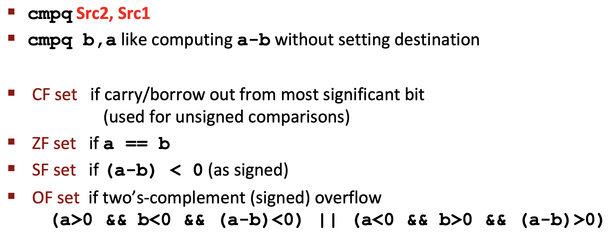
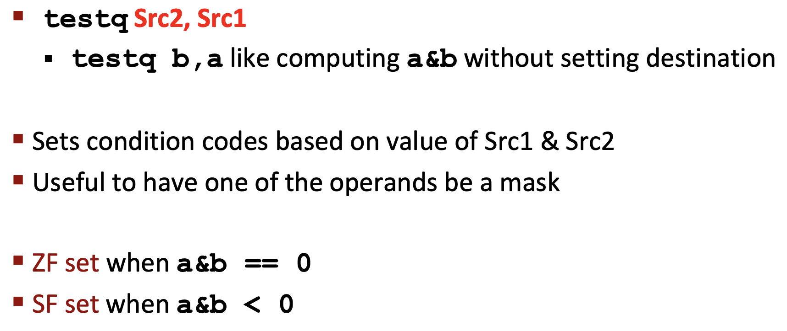
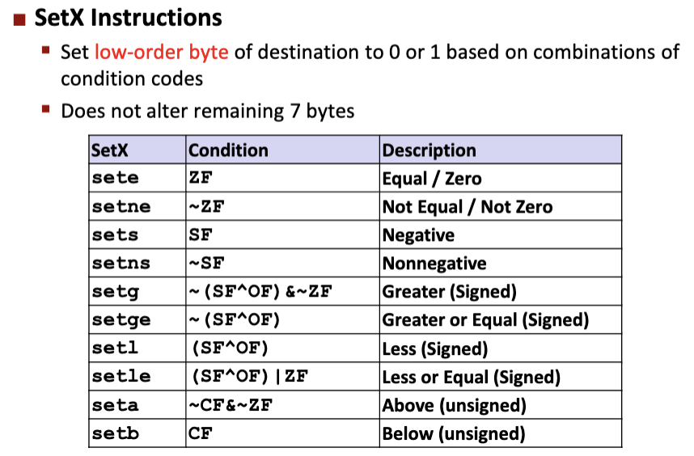
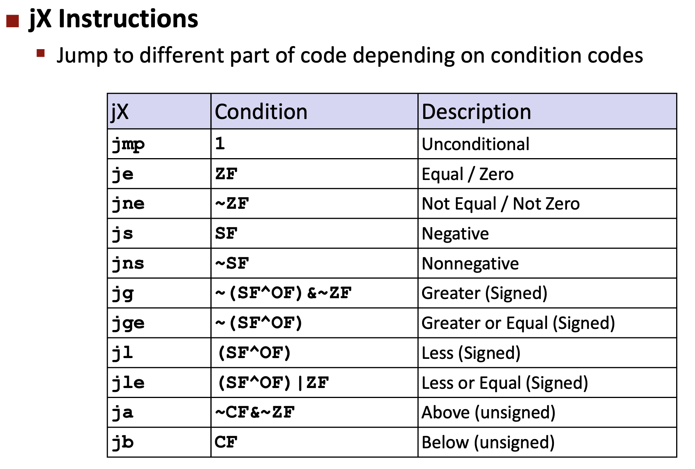
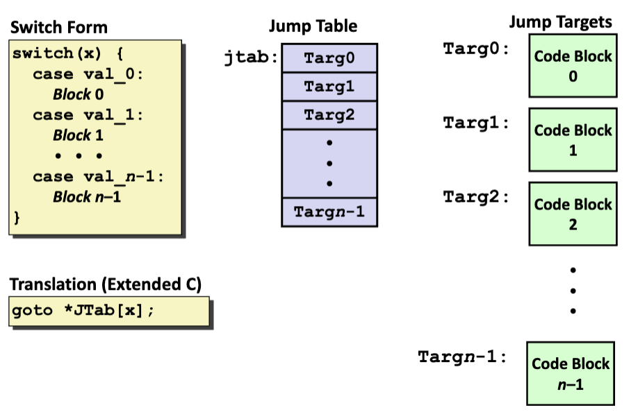

条件码




* 注意cmp实际上做减运算，后减前；
Loop循环结构
- do-while：
do {
body;
} while(test);等价于
Loop:
body;
t = test;
if (t) goto Loop;- while：
while (test) {
body;
}如果开启-O2优化，采用Jump-to-middle翻译方法，即判断在后面，先跳到末尾进行判断，再返回中间执行整体；
goto test;
Loop:
body;
test:
t = test;
if (t) goto Loop;如果开启-O1优化，采用Guarded-do翻译方法，先进行判断，然后转换为do-while循环；
t = test;
if (!t) goto END;
Loop:
body;
t = test;
if (t) goto Loop:
END;- for：
for (init; test; update) {
body;
}转化为while循环：
init;
while (test) {
body;
update;
}写成goto形式：
init;
t = test;
Loop:
body;
update;
if (t) goto Loop;
END;Switch分支结构
- 并非if，通过跳转表来实现，每一个分支被视为一个代码块，代码块的开头的地址被存放在跳转表中；
my_switch:
movq %rax, %rcx
cmpq $6, %rdi // x : 6
ja .L8 // if x > 6, goto default;
jmp *.L4(,%rdi, 8) // *(.L4 + x * 8)的地址上的值，即间接跳转，先计算出跳转表上的索引位置，跳转到该索引上的值处；